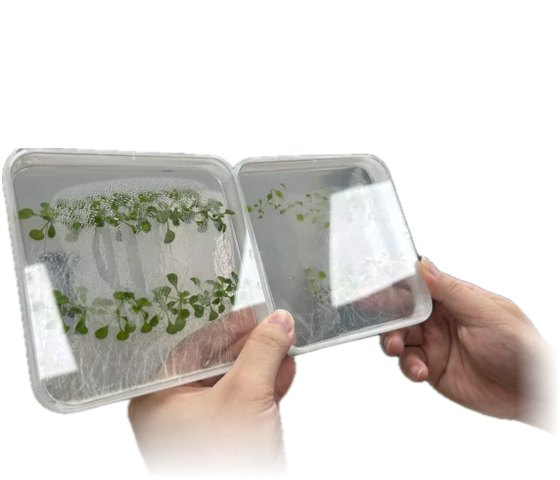
01


A Stress-Responsive Optogenetic Bioreactor for Precision Plant Protection
As long as it benefits the plants and does not disrupt the balance of nature, I am very willing to try any new technology. This allows me more time to go do the farming I love most.
01The threat
Since 1991 the island has warmed 0.29 °C per decade, nearly triple its earlier rate. Rain falls on fewer days and close to 30 % harder.
Western plain
Volatility is highest from Taichung to Tainan, where most of the island’s farmland and rice are.
Alishan
Sunshine in the high-stress months rose from 152.5 to 196.7 hours a month between 1991 and 2021. The high-mountain tea and vegetables grown there have nowhere cooler to move.
Kaohsiung
July nights average 26.7 °C, inside the 25 to 33 °C band that damages rice at grain-setting. The field still looks healthy at dawn.
Most of the farmers we met had lost crops to environmental stress.
So an answer has to be


One spell of heat and drought on one farm, day by day.
The forecast is the only warning that comes before the damage. The first visible sign comes days after the damage starts, and the next check can be weeks away. The farmer can only judge, mix and spray after seeing the problem.
So an answer has to be
Farms already have good tools, each good at what it was built for. A crop under heat and drought stress needs five things at once, and each tool covers some of them.
Chemical or biological products bought at a shop. Some are proteins, made in bacteria that are killed before the protein is sold. They protect the crop, but someone has to notice the stress, buy the product, mix it and spray it.
Covers Protective, Cell-free and Monitored.
Living bacteria or fungi, applied to seed or soil. Taiwan’s microbial fertilisers exclude genetically modified microbes, so an engineered strain cannot be used this way.
Covers Protective, On demand and Monitored.
Farms multiply microbes in their own tanks and spray the fermented broth. The broth is a live culture, with no required quality check.
Covers Protective, On demand and Automatic.
Soil sensors and weather forecasts that open automated valves. They open a valve on time, but they dose the fertiliser or pesticide someone bought and loaded.
Covers On demand, Automatic, Cell-free and Monitored.
ReLeaf
Our answer
ReLeaf is a perfusion bioreactor that makes a plant protectant on the farm and keeps the engineered cells inside it.
Lights its parts in the 3D model.

Loading reactor 0%
Synthetic biology
The reactor’s vessel is sealed, but light passes through its wall. Four modules in the cell turn that light into a secreted protectant.

ho1 and pcyA turn the cell’s heme into phycocyanobilin, which the light sensor needs.
Green light (520 nm) switches CcaS on in the membrane. Red light (660 nm) switches it off.
CcaS passes a phosphate to CcaR, and the CcaR dimer turns on the output gene.
The cell makes the protectant and secretes it into the medium. The output slot takes ACC deaminase, LEA14 or BoPep4.
The voices
So we listened to the people who would shape whether it could work in the real world.
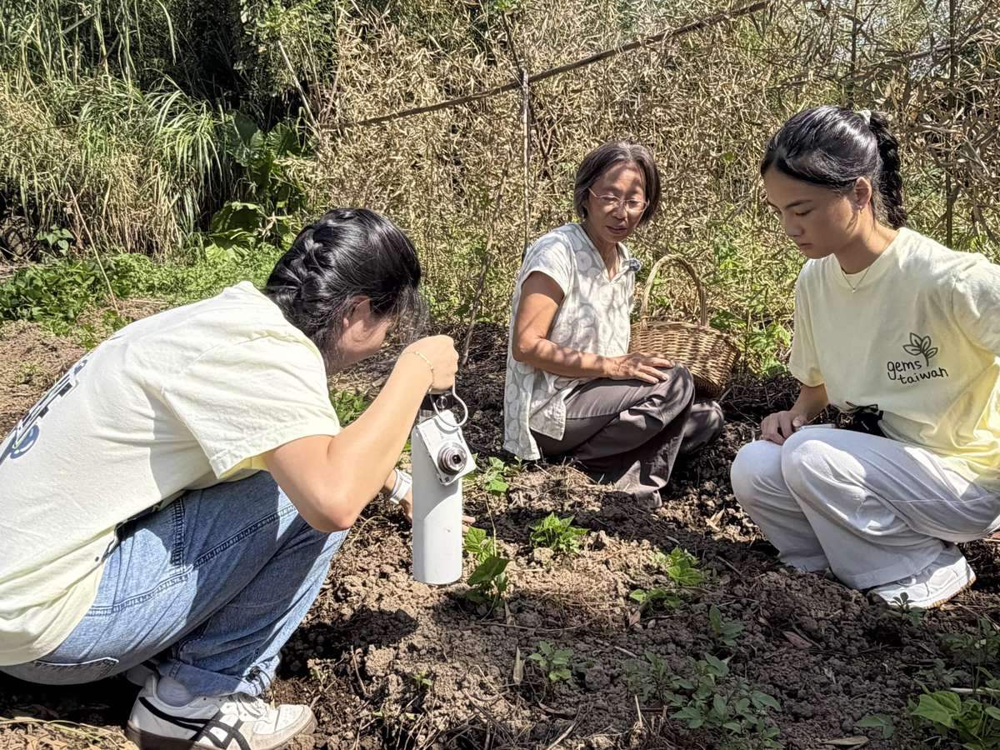
Grounded us in real agricultural needs.
A dose that leaves the crop its own resilience.
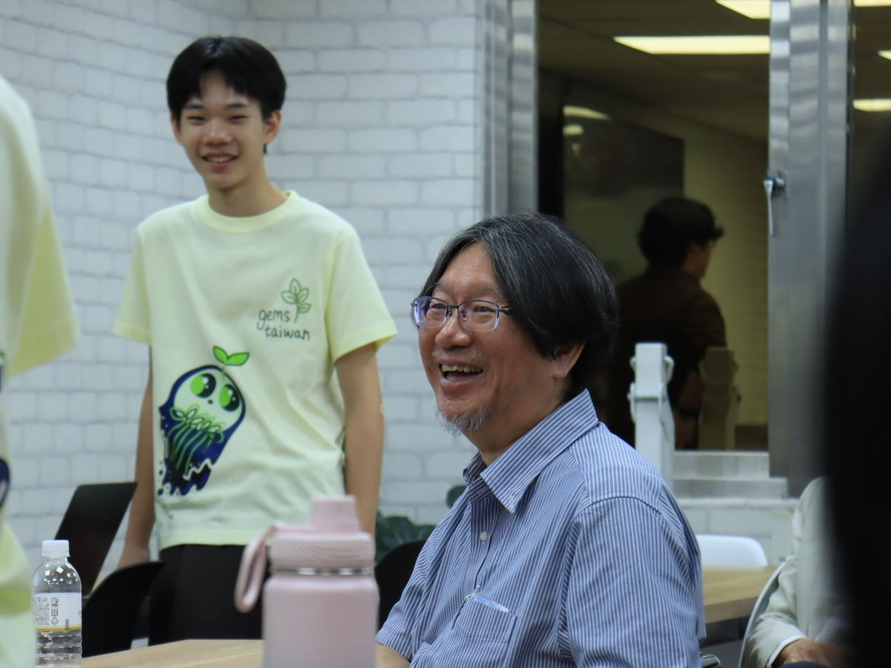
Helped us refine the science and engineering.
Containment first, and a replaceable bacterial capsule.
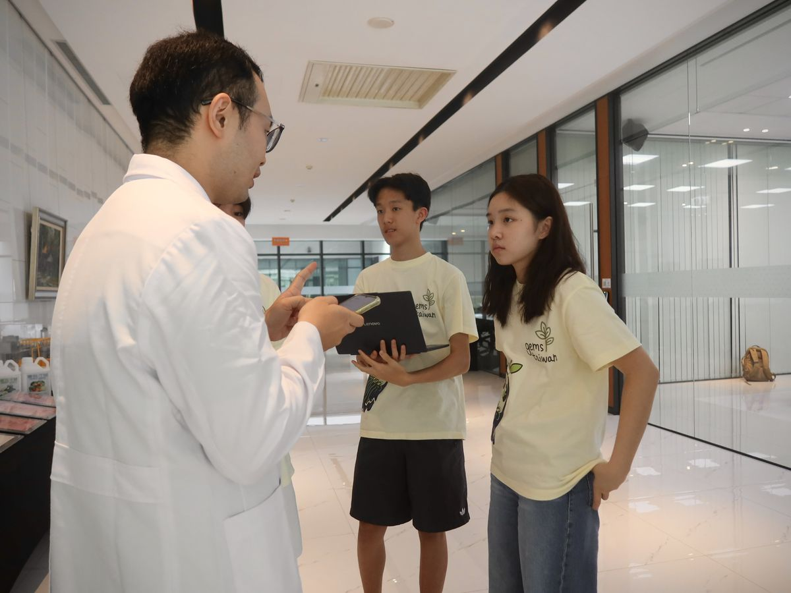
Showed us the barriers between production and access.
Root, leaf and drone delivery compared, with cost per area.
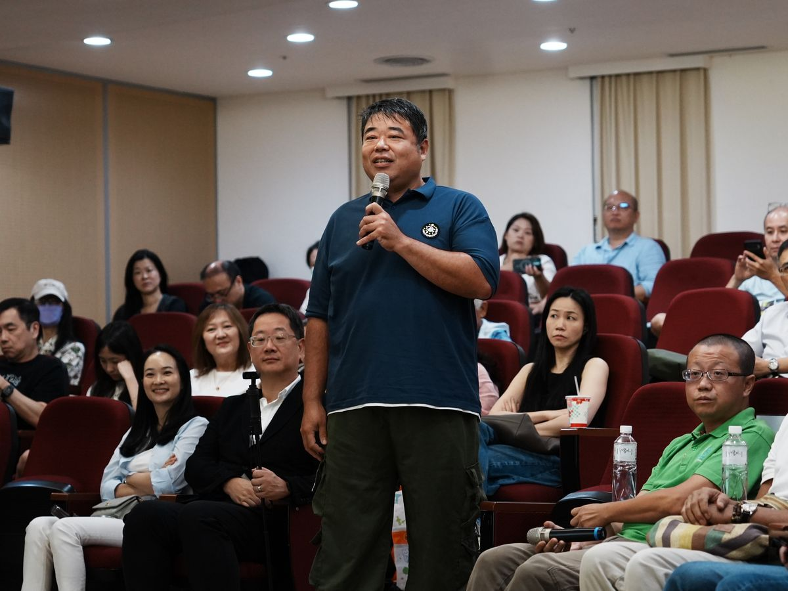
Challenged us to explain, question, and rethink our design.
Two open questions: organic certification, and reactors per farm.

01
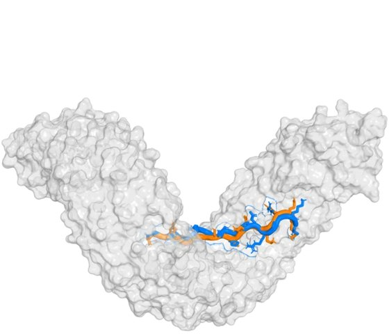
02
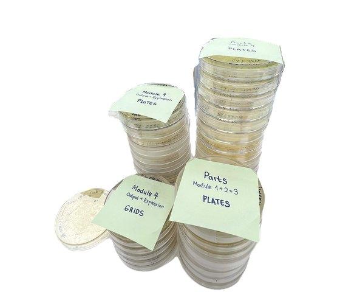
03
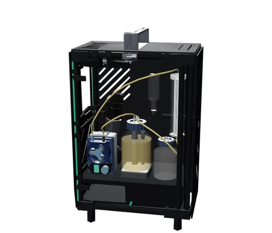
04
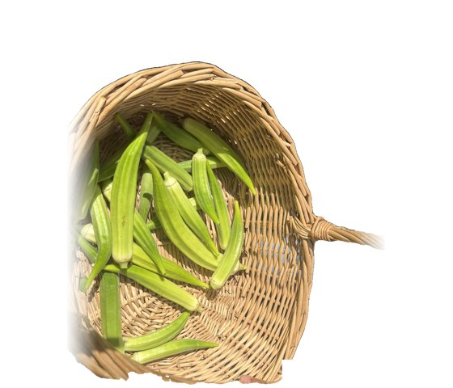
05
The vision
Start with one farm and the reactor at the end of its field.
When stress is forecast, the reactor makes a protectant and adds it to the water the field already gets.

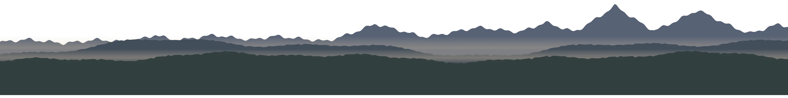
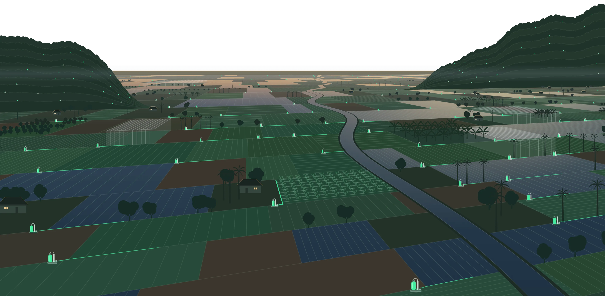
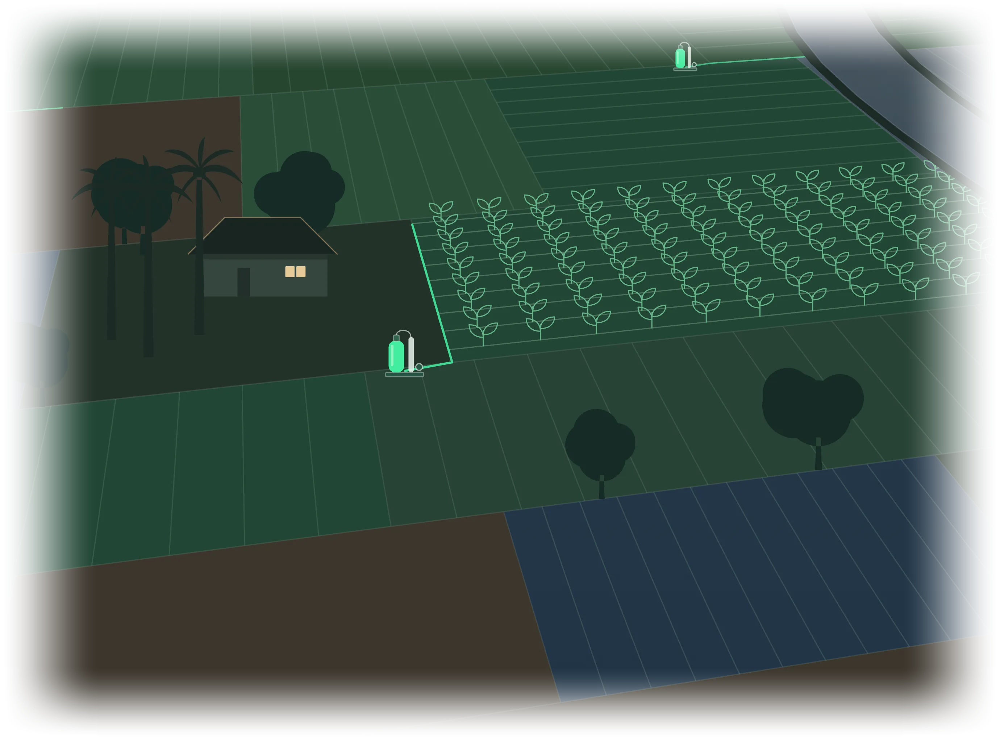
A small factory for plant protectants at the end of each farm’s field.
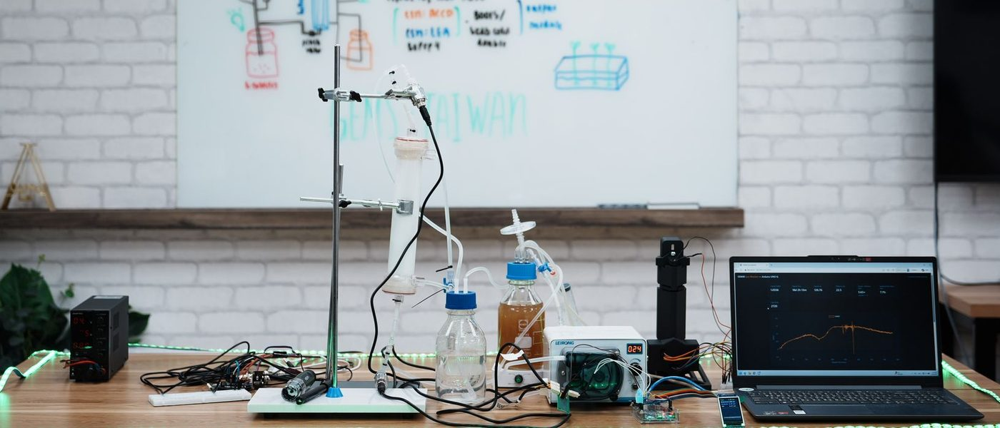
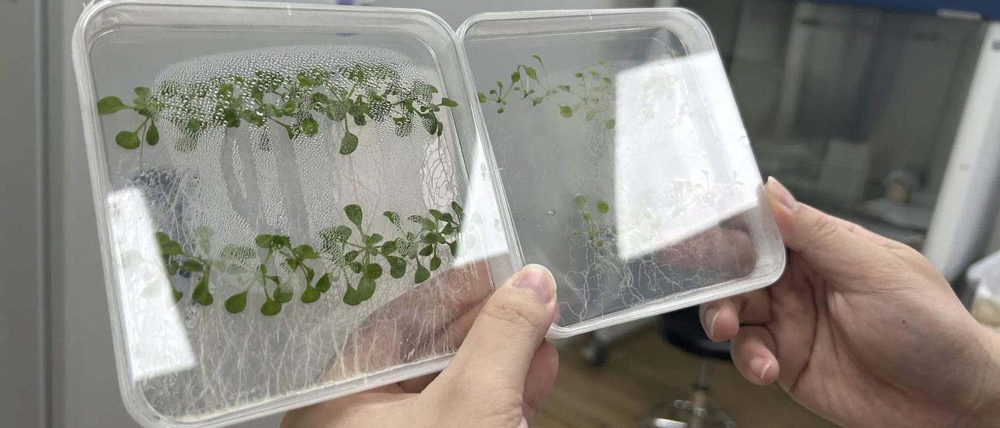

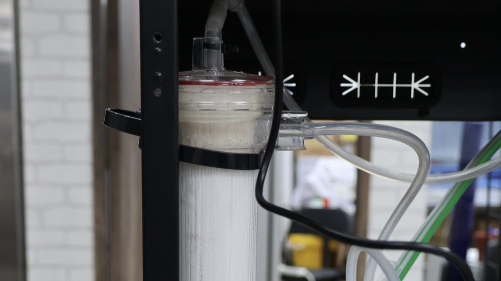
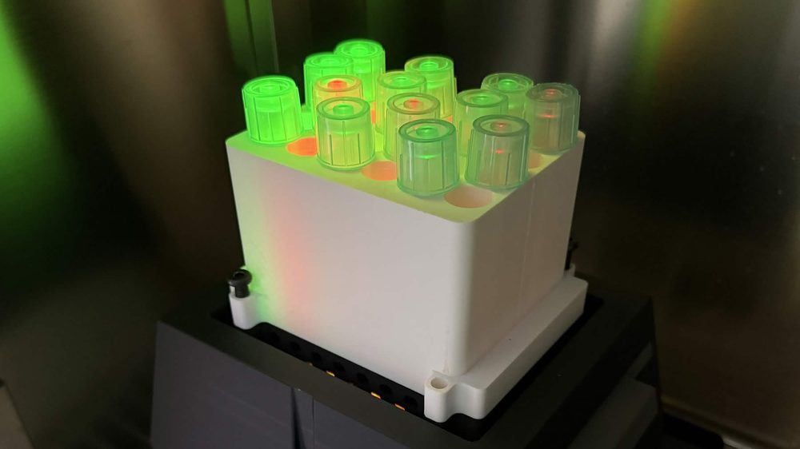